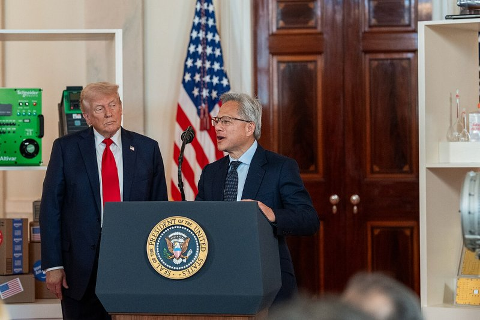

![NTK]()

Huang's Memo Confirmed the Affair. The Lawsuit Arrived Before the Market Closed Its Books.
Nvidia's stock closed down 4.3% on Monday and kept sinking Tuesday morning, a day after Jensen Huang told employees in a memo that he had been unfaithful to his wife (Los Angeles Times). By Tuesday the shares were down 10% from the pre-scandal close, and Huang, 63, had apologized to his wife and children in the same memo. A shareholder then filed a lawsuit seeking class action status, alleging that Nvidia "made false and misleading statements" about the CEO's interactions with Alice Huang (ABC News). The Daily Mail's headline put the delay between the closing bell and the complaint at five minutes.
Nvidia's board answered with an independent committee, outside counsel and a statement of confidence in Huang. It also said it had "no reason to believe that either national security or NVIDIA secrets were compromised." That sentence has a problem, and the board's own position explains it. Huang says he has more than 60 direct reports, and analysts agree no successor has been named. Harvard Business School's David Yoffie called the board's position "between a rock and a hard spot" (Houston Chronicle). The committee is investigating the one person it cannot afford to remove.
The Relationship Reached Back Further Than the Memo, and It Ran Through the Customer List.
The affair is the part Huang has admitted. The business timeline is the part investigators care about. A photo confirmed by The New York Times shows Alice Huang with Jensen Huang at an Italian restaurant in Singapore in December 2023. She had just restructured Megaspeed, the company that would soon buy billions of dollars of Nvidia chips. Washington had barred Chinese buyers from those chips, and she had routed around the ban through a Singaporean shell company (The New York Times). Four days after the ownership change, Megaspeed was named an Nvidia cloud partner, which gave it access to the coveted components.
Her résumé adds a detail the Financial Times found. She spent nearly a decade working alongside Kang Wei, a financier who was her romantic partner and who drew repeated fines from Chinese securities regulators (Financial Times). Nvidia's partner vetting, in other words, had a lot of public record to read.
That Is Why a Personal Scandal Became a Policy Fight in One Weekend.
The affair would have been a bad week. The Megaspeed timeline made it a bigger problem because Huang spent years as the most effective voice against tighter chip export rules, with, as Semafor put it, Trump's ear. His argument was that keeping China hooked on American hardware preserved the American lead. The hawks always called that self-serving. The facts now give them something to cite (Semafor).
The first moves came within hours. Sen. Elizabeth Warren, a Democrat, and Sen. Jim Banks, a Republican, called on Congress to pass their AI Overwatch Act, and Rep. Bill Foster pressed for his Chip Security Act (Al Jazeera). Sen. Chris Coons, the incoming Foreign Relations chair, pointed the scandal at the White House.
Meanwhile Trump, who has been briefed by someone, told reporters he did not say when. He called Huang a "fine person" and added, "you never know what is going on."
Investors have started pricing a company without its founder. The Financial Times put that figure at roughly 30% of Nvidia's pre-scandal value, and the market has so far taken back a third of it.
Nvidia's board has an investigation to run, a customer to explain, and a Nov. 17 earnings call in between.
Nvidia's Nov. 17 Earnings Call Will Force Jensen Huang to Answer Questions the Board Wants Saved for Its Own Investigation
The most likely outcome is that Huang appears on the call and Nvidia's lawyers decide what he can say. An independent committee is already working with outside counsel, and a shareholder class action was filed the same day Trump vouched for Huang. Anything Huang says on the record about Megaspeed or his dealings with Alice Huang becomes evidence in both. Analysts will ask anyway. The likeliest result is a prepared statement, a refusal to take questions on the inquiry, and guidance that gets read for what it leaves out. The Alphabet trade pitched by CNBC Pro treats this call as the event that "could set the tone" for the whole AI complex, so a muted Nvidia will not stay contained to Nvidia. Colette Kress, the CFO, is the person most likely to field the hard questions, which also happens to be the audition the board needs for a succession plan nobody has described.
A House Committee Will Demand Documents on Megaspeed Before the Board's Investigation Finishes
That scrutiny will not wait for the board. Republicans already asked for a briefing with Huang last week, and the new Democratic majority takes over with an easy target. The most likely move in the next two weeks is a document request covering Nvidia's dealings with Megaspeed and the Commerce Department inquiry that, per The New York Times via Semafor, was suspended after an Nvidia executive reached out. Nvidia says it regularly consults with officials. Commerce denies wrongdoing. A letter forces both to put that in writing. Chris Coons, the incoming Senate Foreign Relations chair, has already framed this as a story about the administration, which means Commerce staff are about to become witnesses in a fight they did not choose.
That figure is what turns a personal scandal into a trade-policy one. It gives every export-control bill, including the Warren-Banks AI Overwatch Act and the Chip Security Act, a number to point to.
Export Controls Will Tighten, and Huang's Own Argument Will Be the Reason
The structural consequence arrives more slowly. For years Huang's case to Trump was that selling chips to China kept Beijing dependent on American hardware. That case now has its messenger attached to a suspected Chinese asset. Hawks do not need new evidence; they need a hearing, and they will have one. The most likely outcome is that chip-tracking and export-review provisions move from long-shot bills to must-attach amendments, and that Trump's allowance of H200 sales to China gets reopened by members of both parties. Jim Cramer's "clear sailing to Christmas" depends on Anthropic pricing its IPO on Nov. 18 without a regulatory shock. A tightening vote before then is unlikely. A hearing announcement is not. Google's new TPU systems and the other custom chips Anthropic runs on are the quiet winners of any slowdown at Nvidia, and the next two weeks are when buyers start saying so.
Three doors opened this week that were not open last month, and the first one leads to the other two.
Anthropic's Multi-Chip Filing Hands Buyers a Reason to Stop Treating Nvidia as the Only Option
Anthropic's updated IPO paperwork describes a "multi-chip compute architecture across AWS Trainium, Google TPUs, Nvidia GPUs, and AMD GPUs" built to "optimize for price and performance" (CNBC). Last month that was a technical boast. This week it is a proof of concept sitting in a federal filing, arriving the same day Google rolled out a broader array of its own AI chips (Los Angeles Times). The new combination is a frontier lab that has already shown it can shift workloads across vendors, plus a market suddenly worried about depending on one. Anthropic also plans a $26 billion private placement to Nvidia, Google, AMD, Broadcom, Micron, Microsoft and TSMC, which means the suppliers will be sharing a cap table. Competitors who fund a customer together tend to bid against each other for its next order. A buyer with that leverage can negotiate on price for the first time in years.
Nvidia's Margin Could Become the Thing Customers Negotiate Down
This door only appears if the first one opens. The Financial Times worked through the arithmetic: if Nvidia's market share fell to 50% and its margin sagged to 65%, about $1.4 trillion of value would be at stake (Financial Times). That calculation assumed Huang's departure. A multi-chip buyer changes the cause. Nvidia's pricing power rested partly on its CEO's personal access to the people who set the rules and sign the checks, and partly on the lack of a credible alternative. The scandal weakens the first support while Anthropic's filing weakens the second. Pricing pressure would then arrive through procurement rather than through Huang's exit. The winners would be labs and cloud customers that pay less per chip, and AMD, Google and Amazon, which gain a reference customer for their silicon.
Hawks and Skeptics Could Finally Share a Bill Worth Passing
The generative door is a political one. Sen. Elizabeth Warren, a Democrat, and Sen. Jim Banks, a Republican, are already behind the AI Overwatch Act, and Rep. Bill Foster and Rep. Bill Huizenga, from opposite parties, are behind the Chip Security Act, which would track where exported chips end up (Al Jazeera). Those bipartisan pairings existed before this week. What is new is a Democratic majority with committee gavels and a tech lobby whose most effective advocate has lost the room (Semafor). If chip-location tracking passes, it gives export rules something they have lacked: a way to verify where a chip goes after it ships. Compliance would be built into the hardware instead of resting on a shell company's paperwork. That outcome serves hawks, who get enforcement, and chipmakers, who get a clear standard to follow. It is also the one door here that opens onto a better room than the one the scandal started in.
The loudest explanations for Huang's trouble come from the people who need it to mean something else.
"Huang Had No Idea She Was a Spy," and the Case Is Closed Before It Opens
President Donald Trump has told reporters that Jensen Huang called him Monday and swore he "had absolutely no idea that the person in question was a spy." Trump added that he "really" believes him (ABC News). Nvidia's own spokesperson has described the interactions as "not unusual or unexpected," part of the job.
It is easy to see why people reach for this version. A beloved founder, a company that holds up a fragile market, a story that ends with an apology and a quiet board meeting. Believing it costs nothing, and it answers the fear that everything standing on one man could fall at once.
The people who profit from its spread are specific. Trump has spent years crediting Huang's argument for selling chips to China, and a compromised Huang makes that argument, and the president's H200 approval, look like the thing hawks always said it was. Huang's innocence is the only version in which Trump's policy stays clean. Nvidia's board needs the same version to keep a CEO it has no replacement for.
Start with what the claim cannot cover. Trump said he has not been told when he was briefed, and he dodged that question more than once. He cannot vouch for what a man knew when he does not say what he knew himself. The president also offered a second, quieter line in the same exchange: "you never know what is going on." That is not a character reference. It is a hedge from the person doing the vouching.
Then there is Huang's own memo, which does not claim ignorance. It says "I was unfaithful to my wife," and apologizes. Before that, he had said there was nothing inappropriate about the relationship. An admission that arrives only after a prior denial is the kind a careful reader keeps filed separately from the denial.
The sharper point is that "no idea she was a spy" answers a question nobody has asked yet. The issue before the board, the FBI and Congress is whether the relationship touched business decisions, including Megaspeed's standing as an Nvidia cloud partner and a Commerce Department inquiry that was suspended after an Nvidia executive reached out (Semafor). A man can be fooled about someone's employer and still have made the calls that helped her company. Innocence of intent does not settle conduct.
The pattern is old. In 1963, when John Profumo told the House of Commons there was "no impropriety" in his friendship with a woman who was also seeing a Soviet naval attaché, the denial held for months, and the lie about it ended his career, not the affair itself.
Trump's endorsement came before any investigator finished a sentence. The inquiry is the evidence. A character reference is not.